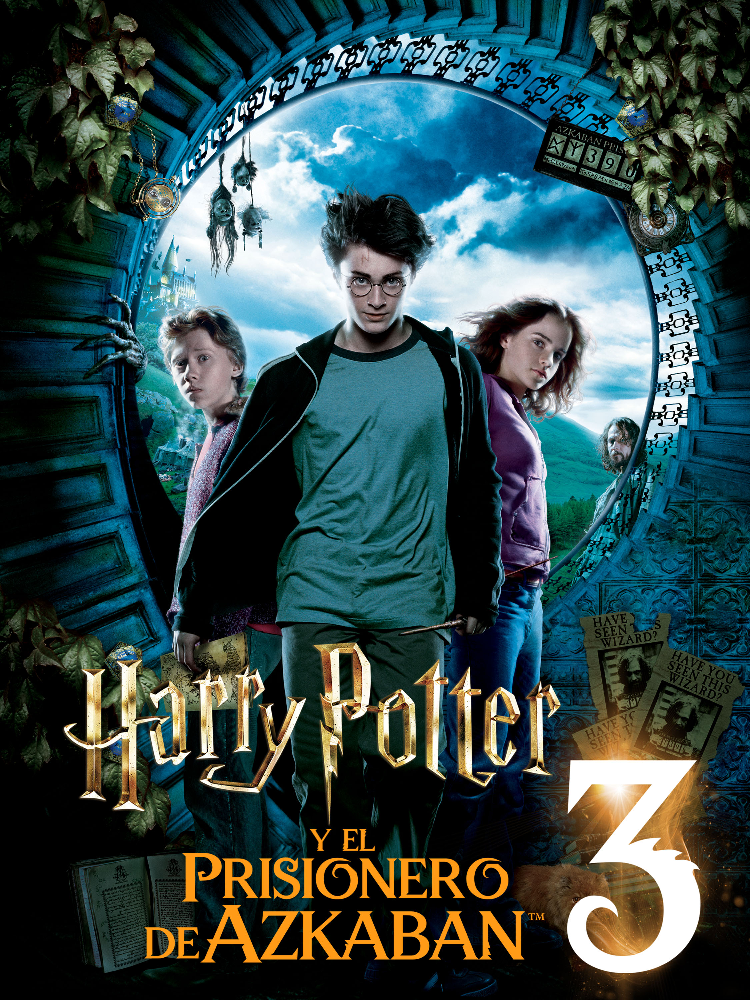

Harry Potter y el Prisionero de Azkaban
Esta película fue dirigida por Alfonso Cuarón y presentó un tono más oscuro en la historia.
Harry regresa a Hogwarts mientras todos hablan de Sirius Black, un peligroso prisionero que escapó de Azkaban, la prisión de los magos.
Además aparecen los dementores, criaturas aterradoras que custodian la prisión y afectan profundamente a Harry.
Con el tiempo, Harry descubrirá que no todo es como parece.
Datos importantes
- Año de estreno: 2004
- Director: Alfonso Cuarón
- Duración: 142 minutos
- Elemento principal: Sirius Black y los dementores
